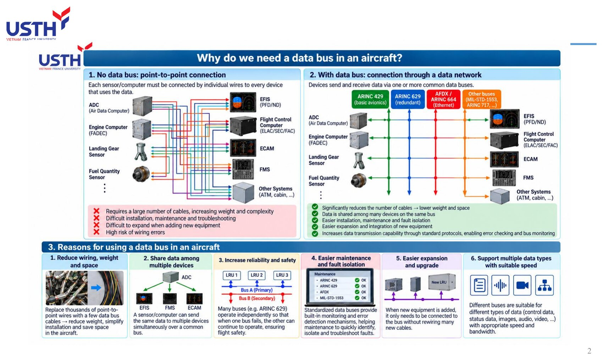
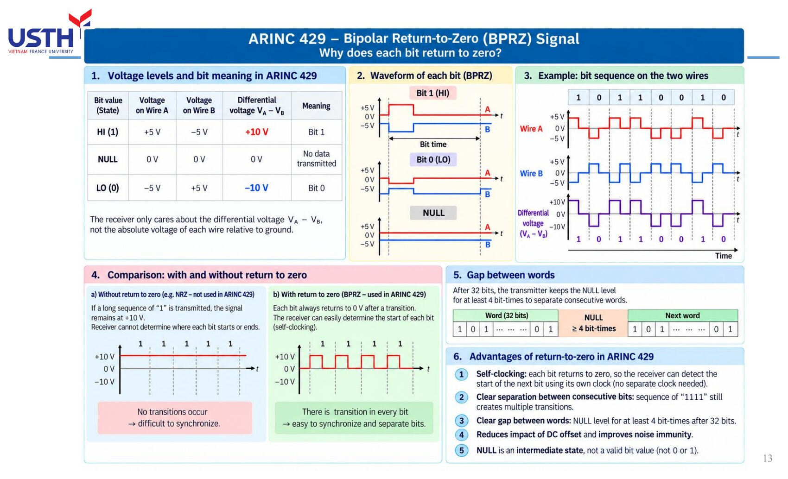
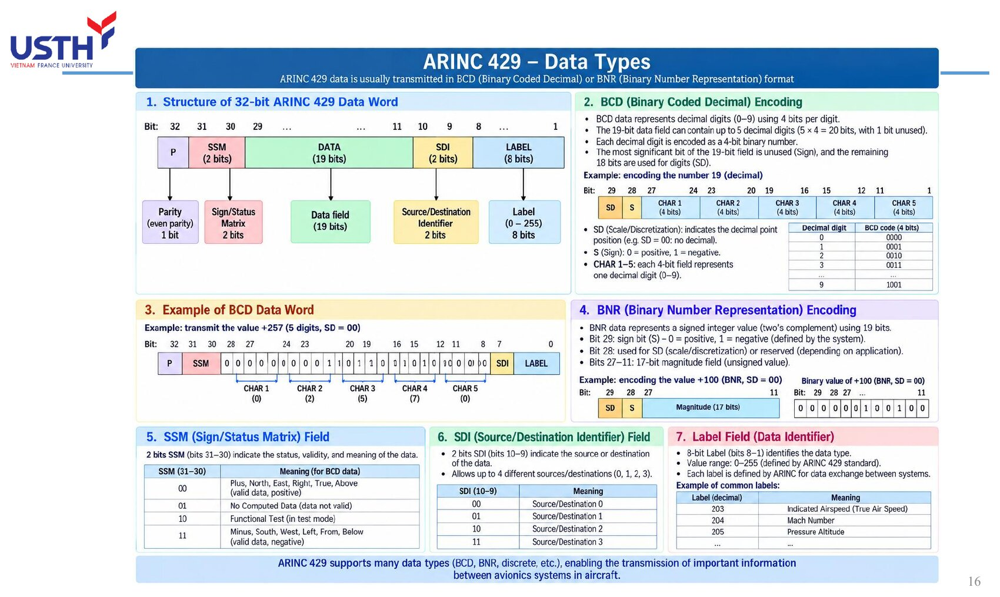
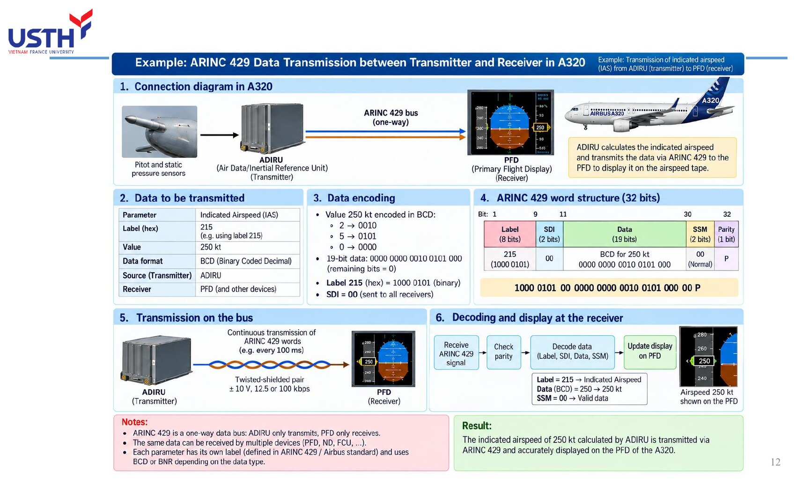
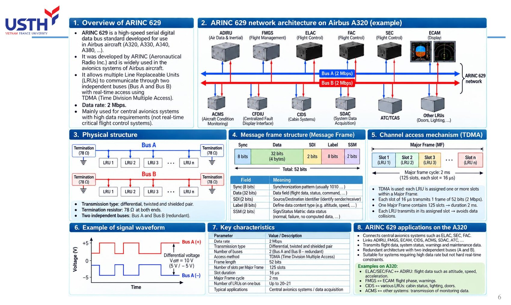
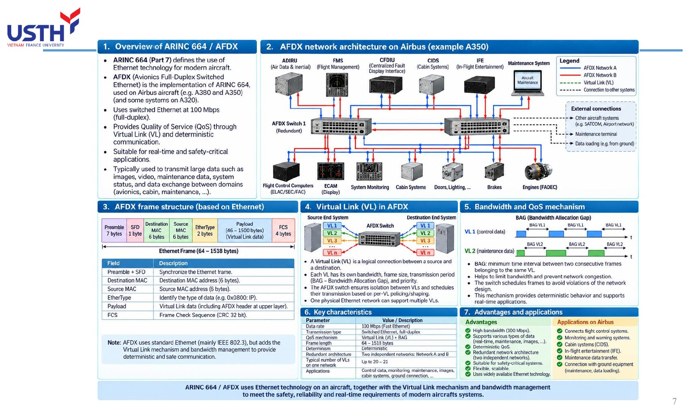
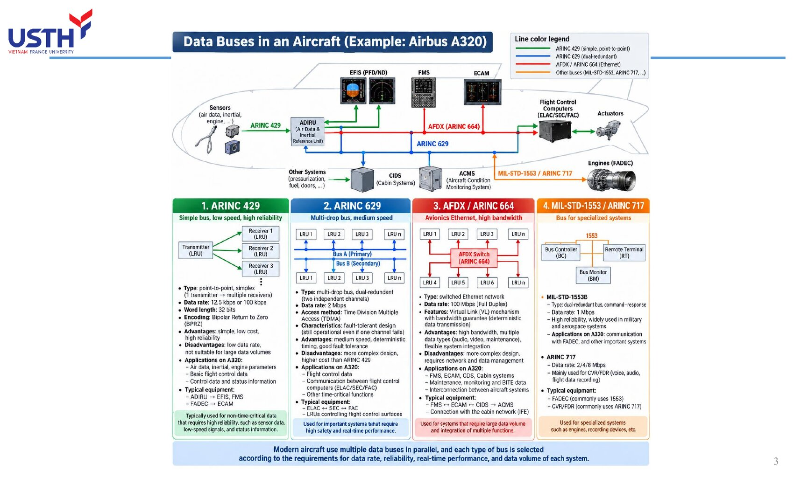

Tooley ch.4 (p.53-69) · Lecture "Data Buses" (18 slides)
Tooley: Ch.4 Data buses (p.53-69): bus rationale, ARINC 429 (electrical/word format/BCD-BNR), other standards (ARINC 629/AFDX/MIL-STD-1553/legacy buses), 17-question MCQ bank
Floyd: Floyd has NO chapter on aircraft data buses whatsoever: it is a pure digital-electronics textbook (logic gates, memory) with no coverage of avionics-specific serial communication. This module relies entirely on Tooley and the course's own lecture slides.
This module has the LOWEST match with Floyd of all 5 modules (even lower than Module 04): aircraft bus topics are entirely absent from Floyd, so this module's quiz has only 2 sources (Tooley + supplementary questions), with no separate Floyd quiz section.
A modern aircraft has hundreds of LRUs (Line Replaceable Units) that need to exchange data. Instead of wiring every device pair separately, avionics systems use a DATA BUS: one (or a few) shared transmission lines following a single communication standard. This module goes from why a bus is needed, through the most common standard (ARINC 429), to other standards (ARINC 629, AFDX/664, MIL-STD-1553) and real applications on the Airbus A320.
Tooley ch.4 (p.53-69) · Lecture "Data Buses" (18 slides)
Before data buses, every sensor/computer (ADC, FADEC, landing-gear sensor...) had to be wired SEPARATELY to EVERY device that needed its data (EFIS, FMS, ECAM...). With dozens of sensors and dozens of displays/computers, the number of wires grows combinatorially, not linearly.

Picture 5 sensors, each needing to send data to 5 different displays: point-to-point wiring needs 5×5=25 separate wires. Adding one new sensor means running 5 more new wires (one to each display). This is exactly the left-hand diagram in the lecture slide: ADC, FADEC, landing-gear sensor, fuel-quantity sensor... each device has its own colour-coded bundle of wires running every which way to EFIS, Flight Control Computer, ECAM, FMS.
The lecture slide lists 4 main drawbacks: a large number of cables (heavy, space-consuming), difficult installation/maintenance/troubleshooting, difficult expansion when adding new equipment, and a high risk of wiring errors due to sheer volume.
Instead of separate wires for every device pair, ALL devices connect to one (or a few) shared bus lines, sending/receiving data following a single protocol. In the lecture: ARINC 429, ARINC 629, AFDX/664, MIL-STD-1553 are 4 different bus “lanes”, each serving a different set of needs.
Back to the 5 sensors × 5 displays example: with one shared bus, each sensor needs exactly ONE wire into the bus, and each display needs exactly ONE wire reading from the bus: 10 wires total instead of 25, and this count grows only LINEARLY as devices are added (one more sensor = exactly one more wire), not combinatorially like point-to-point.
The lecture lists 5 benefits mirroring the 5 drawbacks from the previous slide: significantly fewer cables/less weight, multiple devices can share the same data, easier installation/maintenance/fault isolation, easier integration of new equipment, and standardised error-checking/bus-monitoring support.
| # | Reason | Short explanation |
|---|---|---|
| 1 | Reduce wiring, weight, space | Replace thousands of point-to-point wires with a few bus cables |
| 2 | Share data | One sensor transmits, many devices receive |
| 3 | Increase reliability/safety | Multiple independent buses (e.g. Bus A/B) run in parallel |
| 4 | Easier maintenance, fault isolation | Built-in monitoring/error-reporting per the standard |
| 5 | Easier expansion, upgrade | New equipment just connects to the bus, no new wiring run |
| 6 | Supports multiple data types at the right speed | Each bus type has its own speed/characteristics for its need |
This table combines exactly the 6 boxes at the bottom of slide 2 in the lecture. Worth noting: reason #3 (higher reliability) doesn't come just from HAVING a bus, but from the REDUNDANT design of that bus, e.g. ARINC 629 has Bus A (primary) and Bus B (secondary) operating INDEPENDENTLY: if Bus A fails, Bus B keeps working normally.
Reason #6 explains why an aircraft does NOT use a single bus type for everything: flight-control data needs high reliability/real-time performance but low volume (suited to ARINC 429/629), while maintenance/image/video data needs high bandwidth (suited to AFDX at 100 Mbps). This is exactly why an A320 runs SEVERAL different bus types IN PARALLEL, not just one.
| Bus | Speed | Type | Used for |
|---|---|---|---|
| ARINC 429 | 12.5/100 kbps | Unidirectional, point-to-point | Basic avionics, sensor data |
| ARINC 629 | 2 Mbps | Bidirectional, dual redundant | Real-time flight control |
| AFDX/ARINC 664 | 100 Mbps | Switched Ethernet | Large-volume, multi-system data |
| MIL-STD-1553/ARINC 717 | 1 Mbps / 2-8 Mbps | Specialised | Military, FADEC, flight data recording |
This table summarises the 4 coloured columns in the lecture's “Data Buses in an Aircraft (A320)” diagram: green (ARINC 429), blue (ARINC 629), red (AFDX/664), orange (MIL-STD-1553/ARINC 717). Each coloured wire in the original diagram connects a different group of devices: ARINC 429 links sensors to the ADIRU/EFIS/FMS, ARINC 629 interlinks the flight-control computers, AFDX links most modern avionics systems, and MIL-STD-1553/717 is reserved for the engines (FADEC) and the cockpit voice/data recorders.
The speed ordering (429 < 1553 < 629 < AFDX) is NOT proportional to “importance”: ARINC 429 is the slowest yet remains the most widely used because it is simple, cheap, and extremely reliable for data that does NOT need high bandwidth.
An aircraft has 8 sensors, each needing to send its own data to 6 different displays. With point-to-point wiring, how many wires are needed? With a shared bus (assuming each device needs just one wire into the bus), how many wires are needed?
Point-to-point: 8×6=48 separate wires (each sensor wired individually to each display). Shared bus: 8+6=14 wires (every device, whether sensor or display, needs exactly one wire into the bus).
The gap between 48 and 14 (nearly 3.5 times) clearly shows: point-to-point wiring grows with the PRODUCT of device counts (n×m), while a shared bus grows with the SUM (n+m). This gap widens further as device counts grow, exactly matching reason #1 from the previous slide.
ARINC 429 is a POINT-TO-POINT, UNIDIRECTIONAL bus: one transmitter (a sending LRU) can connect to up to 20 receivers (receiving LRUs), but data flows in only one direction. For two LRUs to exchange data both ways, two separate ARINC 429 channels are needed, each one-way.
This is the most confusing point when first learning ARINC 429: why does an LRU like the ADIRU have both Tx (transmit) and Rx (receive) pins? The answer is exactly in slide 11 of the lecture: because ARINC 429 is UNIDIRECTIONAL, one physical channel only carries data one way. If the ADIRU needs to SEND air data to the FMGC AND RECEIVE mode-selection commands from the FMGC, that is two completely separate ARINC 429 channels running in parallel, not one “two-way” channel.
A complex LRU like the ADIRU can have dozens of different Tx/Rx channels, each one serving exactly one one-way data flow to/from one specific group of devices.
Shielded twisted pair cable. Each wire (A, B) carries +5V/0V/-5V relative to ground. The receiver only cares about the DIFFERENTIAL voltage (A-B): +10V = bit 1, -10V = bit 0, 0V = NULL state (no data).
Using DIFFERENTIAL signalling instead of measuring the absolute voltage of one wire against ground is a classic noise-immunity technique: if external electromagnetic interference strikes, it typically affects BOTH wires A and B nearly EQUALLY (since they are tightly twisted together), so the difference (A-B) stays nearly UNCHANGED, preserving the bit value even in a very electrically noisy environment (engines, radar).
The voltage table in the lecture is easy to remember by its symmetry: bit 1 → A positive/B negative; bit 0 → A negative/B positive (fully inverted); NULL → both wires return to 0V (no difference).
ARINC 429 uses Bipolar Return to Zero (BPRZ) encoding: between every bit, the signal always returns to 0V before the next bit starts. This lets the receiver recover timing (self-clocking) directly from the data signal, with no separate clock wire needed.

A direct comparison from the lecture slide: WITHOUT return-to-zero (like NRZ encoding), a run of consecutive “1111” bits would hold the voltage at +10V for all 4 bit periods, with no transition edge for the receiver to tell exactly where one bit ends and the next begins: easy to “lose count” of bits if the two clocks are not perfectly matched. With BPRZ, EVERY bit has at least one rising and one falling edge (even during a run of 1111s), so the receiver always has a reference point to re-count timing and never drifts.
The trade-off: BPRZ needs a higher SWITCHING FREQUENCY than NRZ at the same bit rate (because of the extra return-to-zero transition within every bit), but in exchange gets much better synchronisation reliability, well worth it for safety-relevant avionics data.
ARINC 429 has two speeds: low speed 12.5 kbps (most common) and high speed 100 kbps. Since a data word is always 32 bits: t_word = 32/R. At 12.5 kbps: t=2.56 ms. At 100 kbps: t=0.32 ms (8 times faster).
This is exactly this module's “formula” (see the formula box below the deck). Plugging in numbers directly: 32 bits / 12,500 bit/s = 0.00256 s = 2.56 ms; and 32 bits / 100,000 bit/s = 0.00032 s = 0.32 ms. Both figures match EXACTLY the “Data Rate and Bit Timing” table in the lecture, independently re-checked with the companion notebook.
Why do most A320 systems still use the LOW speed (12.5 kbps) instead of the high speed? Because most basic avionics data (airspeed, altitude, warning status...) does not change fast enough to need updates more than a few hundred times per second, so the low speed is already more than sufficient, and is cheaper in terms of circuitry.
ARINC 429 connects almost EVERY system group on the A320: flight control (ELAC/SEC/FAC), guidance (FMGC/MCDU/FCU), air data/inertial (ADIRU), display/warning (DMC/DU/FWC), communication (VHF/HF/AMU/RMP), plus engines, electrical, landing gear, fuel, and more.
The lecture's diagram shows that ARINC 429 is not a “small, niche” bus used by only a few devices, but rather the BACKBONE connecting most LRUs on the A320, with two parallel buses, Bus A and Bus B, for redundancy. Every LRU in the diagram has its own Tx (red, transmit) and/or Rx (blue, receive) markers, consistent with the unidirectional principle from the previous slide.
The lecture's “Receiver of some LRUs” table is a good worked example: the ADIRU transmits air data/inertial data, received by MULTIPLE other LRUs (FMGC, FWC, DMC) thanks to ARINC 429's multi-drop property (one transmitter → up to 20 receivers).
Exams often ask “what voltage is present ON THE CABLE of ARINC 429?”: the CORRECT answer is ±5V (the voltage of each individual wire A or B relative to ground), NOT ±10V (that is the DIFFERENTIAL voltage between the two wires, which only appears when comparing A to B).
This is exactly question 9 of the 17 original multiple-choice questions from Tooley, and the book's official answer is ±5V, not +5V/+10V or ±15V. This mix-up is very common because many other sources only mention the “10V” figure (the differential voltage) without clarifying that it is the difference between two wires, not a voltage measured directly on one wire.
Memory tip: always ask “is THIS voltage measured relative to ground, or relative to the other wire?” before choosing an answer to any differential-voltage question.
Every ARINC 429 word is a FIXED 32 bits long, made of 5 fields in this exact order: Label (8 bits, bits 1-8) → SDI (2 bits) → Data (19 bits) → SSM (2 bits) → Parity (1 bit, bit 32). Bit 1 (part of the Label) is transmitted FIRST, bit 32 (Parity) is transmitted LAST.
The “LSB first, MSB last” transmission order (bit 1 is the LSB of the whole word, sent first) is a detail that is easy to miss but important when manually decoding an ARINC 429 word from a waveform: counting bits in the wrong order will misread the entire Label/Data.
8+2+19+2+1 = 32, matching the total word length. This is why questions 8 and 15 of the original multiple-choice bank (Label=8 bits, word length=32 bits) can be derived directly from this diagram without memorisation, just by remembering to add the 5 field lengths correctly.
The Label (8 bits) identifies the TYPE of data being transmitted, e.g. Label 203 = Indicated Airspeed, Label 204 = Mach Number, Label 205 = Pressure Altitude. Up to 256 distinct Label values are possible (0-255).
The Label works like a “shipping label” on a package: the receiver does not need to know the package contents in advance, it just reads the Label to know HOW to process the accompanying 19-bit Data (e.g. decode it as BCD or BNR, what unit, what scale).
Since the Label only has 8 bits (256 values) but the real number of avionics data types exceeds 256, the accompanying SDI (Source/Destination Identifier) field is used to FURTHER distinguish source/destination under the same Label, expanding the number of distinguishable “channels”.
| Format | Encoding | Sign |
|---|---|---|
| BCD | Each decimal digit = its own 4 bits | 1 sign bit (S) + digits |
| BNR | The whole value = one binary number | Two's complement |

BCD (as learned in Module 01) splits EACH decimal digit into its own 4 bits: e.g. 250 → CHAR1=2(0010), CHAR2=5(0101), CHAR3=0(0000). Advantage: easy to display directly on a 7-segment display without base conversion. Drawback: wastes bits (4 bits can only represent 10 of 16 possible patterns).
BNR encodes the ENTIRE value as a single binary number (no digit-splitting), using two's complement for negative values: bit 29 (the Data field's MSB) is the sign bit, 0=positive, 1=negative. BNR is more bit-efficient than BCD, so it is used for data needing high precision such as position or angular rate.
SSM (Sign/Status Matrix, 2 bits) reports what state the data is in. For BNR: 00=Failure Warning, 01=No Computed Data, 10=Functional Test, 11=Normal Operation (valid data).
This is a very clever SELF-REPORTING mechanism: instead of just sending a NUMBER and hoping it is correct, every ARINC 429 word ALWAYS carries a “confidence label” alongside the data itself. If the ADIRU detects a faulty airspeed sensor, it still sends the word as usual but sets SSM=00 (Failure Warning): the receiver (PFD) reading this SSM will display a warning instead of trusting the (possibly wrong) number in the Data field.
This is why an avionics engineer debugging a system should NEVER conclude data is correct or wrong just by looking at the Data field alone: the SSM must always be checked first.
The last bit (bit 32) is an ODD parity bit: the total count of 1-bits across the entire 32-bit word is ALWAYS odd. If the receiver counts an EVEN total, the word is considered corrupted and discarded.
How it works: the transmitter counts the 1-bits in the first 31 bits (Label+SDI+Data+SSM); if that count is already ODD, it sets Parity=0 (no change needed); if that count is EVEN, it sets Parity=1 (to make the total odd). The receiver simply recounts all 32 bits; an even result means at least one bit was flipped by noise during transmission.
The limitation of 1-bit parity: it only detects an ODD number of bit errors (1, 3, 5...); if exactly 2 bits flip at the same time (rare but possible), the odd/even total stays correct and the error goes UNDETECTED: this is why higher-safety systems (like AFDX) use a multi-bit CRC instead of a single parity bit.
The ADIRU computes IAS=250kt → BCD-encodes it: 2→0010, 5→0101, 0→0000 → packs it into the 19-bit Data field. It adds the Label (identifying IAS), SDI, SSM=11 (Normal), computes Parity → packages a 32-bit word → sends it repeatedly about every 100ms over ARINC 429 Bus A to the PFD.

This is an end-to-end example that brings together EVERY field learned in this section: Label (identifies this as IAS), SDI (identifies source/destination), Data in BCD (the value 250), SSM (reports valid data), Parity (self-checks for errors). The receiver (PFD) does the EXACT REVERSE: checks parity first, reads the Label to know this is IAS, reads the SSM to confirm the data is valid, then finally reads the Data and displays it on the airspeed tape.
Sending the word REPEATEDLY (not just once) matters a lot: if the PFD misses one word (noise, parity error), it only has to wait about 100ms for the next one, rather than being “stuck” indefinitely from losing exactly one packet.
ARINC 629 (2 Mbps, 20 times faster than ARINC 429) is a BIDIRECTIONAL bus: each LRU can both transmit (Tx) and receive (Rx) on the SAME bus. It uses TDMA (Time Division Multiple Access): each LRU is pre-assigned fixed time slot(s) to transmit, avoiding data collisions.

The single most distinctive feature of ARINC 629, emphasised directly in the lecture: it achieves BIDIRECTIONAL communication WITHOUT needing a separate central bus controller, which could otherwise become a single point of failure if it broke down. Instead, each LRU knows its own “turn” (slot) within the Major Frame through shared timing synchronisation, with no need for anyone to signal “it's your turn to transmit”.
With 125 slots of 16 μs each within a 2ms Major Frame, and up to 20-21 LRUs on one bus: these are the actual figures from the lecture, and can be used to re-derive the full cycle time (125×16μs=2000μs=2ms, which checks out exactly).
Each ARINC 629 frame consists of: Sync (8 bits) + Data (32 bits, 4 bytes) + SDI (2 bits) + Label (8 bits) + SSM (2 bits) = 52 bits. Compared to ARINC 429 (32 bits/word, no separate Sync), ARINC 629 adds a Sync field to synchronise frames in a TDMA system shared by many LRUs.
An interesting observation: ARINC 629's Label (8 bits), SDI (2 bits) and SSM (2 bits) are IDENTICAL in size and meaning to ARINC 429's, showing that ARINC 629 was designed as a direct extension of ARINC 429, simply EXPANDED to support many LRUs sharing one bus (needing Sync to know when a frame starts) and bidirectional flow.
Since each 52-bit frame transmits within a 16μs slot at 2 Mbps: 16μs × 2,000,000 bit/s = 32,000 bits, far more than the 52-bit frame itself, because each slot also includes a gap between frames to prevent signal overlap between adjacent LRUs.
AFDX (Avionics Full-Duplex Switched Ethernet) is 100 Mbps switched Ethernet, used on the A380/A350 (and partly on newer A320s). Instead of a shared bus like 429/629, AFDX uses a central SWITCH, with each device connected to its own dedicated switch port.

The most important architectural difference: ARINC 429/629 is a “shared line” type bus (all devices listen on the same physical transmission line), while AFDX is a “star via switch” type network (similar to an office Ethernet network): each LRU has its own DEDICATED wire to the switch, and the switch is responsible for forwarding each packet to the correct destination.
Because it uses a switch, AFDX reaches 100 Mbps bandwidth, enough for “heavy” data like maintenance imagery, camera video, and simultaneous data from many systems: data types that are simply NOT feasible on ARINC 429 (only 12.5-100 kbps).
A physical AFDX network is divided into multiple LOGICAL Virtual Links (VLs), each with its own bandwidth, frame size, and minimum transmission period (BAG - Bandwidth Allocation Gap). The switch ensures VLs are ISOLATED from each other, so no VL can consume another VL's bandwidth.
Think of VLs as dedicated lanes on the same highway (the physical Ethernet cable): although all cars (data) travel on the same road, each lane (VL) has its own speed limit and traffic capacity, and cars in one lane cannot spill over into another. This is exactly how AFDX achieves DETERMINISM: while ordinary Ethernet networks can suffer unpredictable “congestion”, AFDX guarantees that each critical data flow (e.g. flight-control commands) ALWAYS gets its committed share of bandwidth, unaffected by other data (e.g. passenger entertainment video).
This is why AFDX is suitable for carrying BOTH safety-critical data (flight control) AND non-critical data (cabin, entertainment) on the same physical network without fear of conflict.
MIL-STD-1553B uses a command-response architecture with one Bus Controller (BC) managing up to 31 Remote Terminals (RT), at 1 Mbps. MIL-STD-1773B is the fibre-optic version, with much greater immunity to high-intensity radiated electromagnetic fields (HIRF).
Quite the opposite philosophy from ARINC 629's “no central controller needed”: MIL-STD-1553B DELIBERATELY uses a single Bus Controller to command every Remote Terminal: the BC asks “RT number 5, what data do you have”, and RT5 responds, exactly a command-response pattern. This choice suits military environments where tight control and precise predictability of which device is “speaking” at any moment are required.
On a civilian A320, this standard (along with ARINC 717) is mainly used for FADEC (engine control) and the cockpit voice/data recorders (CVR/FDR), where extremely high reliability is needed but high bandwidth is not.
| Standard | Key feature |
|---|---|
| ARINC 419/561 | Predecessors of 429, pre-1970, six-wire or two-wire systems |
| ARINC 573/717 | Flight data recording (FDR), Harvard Bi-Phase encoding |
| ARINC 708 | Weather radar, Manchester encoding, 1 Mbps |
| CSDB / ASCB | Proprietary Collins/Honeywell standards, small aircraft |
| FDDI | 100 Mbps dual-ring network, developed for the Boeing 777 |
This table does not need to be memorised in detail, only the KEY IDEA: aviation has MANY specialised bus standards that emerged over different eras, each solving one narrow need (radar, voice recording, small aircraft...). The single most memorable point for this module: ARINC 708 genuinely uses MANCHESTER encoding (unlike ARINC 429's BPRZ): this is exactly the standard that got mixed up with ARINC 429 in one lecture slide (see the ⚠️ warning box at the start of this module).
FDDI is notable for an “interesting failure” story: Boeing developed it specifically for the 777, but later Boeing itself decided to drop FDDI in favour of cheaper 10Mbps Ethernet, showing that even a technically advanced standard can be replaced for COST reasons, not just technical ones.
The A320 uses SEVERAL bus types SIMULTANEOUSLY, each serving the group of systems it fits best: AFDX for most modern avionics, ARINC 429 for sensors/basic data, ARINC 629 for real-time flight control, MIL-STD-1553/717 for engines and data recording.

The lecture's “A320 - Connection between major LRUs” diagram is a map that ties together EVERYTHING learned in this module: 5 LRU groups (FCS, FMS/Guidance, Air Data, Display/Warning, Communication) at the top connect down through different bus LAYERS (AFDX → ARINC 429 → ARINC 629), then down to sub-system groups (Navigation, Engine, Electrical, A/C, Landing Gear, Fuel, Maintenance) at the bottom.
The layering order is not random: AFDX sits at the top because it is the fastest and connects the most devices; ARINC 629 sits nearer the bottom because it only serves the narrower flight-control group, but with the highest real-time requirement.
| Data flow | Via which bus |
|---|---|
| ADIRU → FMGC (air data, inertial data) | ARINC 429 |
| ELAC ↔ SEC ↔ FAC (flight control) | ARINC 629 |
| FMGC ↔ ECAM ↔ CIDS ↔ ACMS (large data, maintenance) | AFDX |
| FADEC ↔ engines (engine parameters) | MIL-STD-1553/ARINC 717 |
This table gathers “Example Connections” scattered across several lecture slides into ONE table, making it clear: on the same aircraft, each SPECIFIC device pair uses the bus type that best fits ITS OWN need, and no single bus type “does everything best”.
This is also the real-world answer to “why not just use one bus type for simplicity”: because each bus type trades off speed/reliability/cost differently, and using the WRONG bus type for a specific need (e.g. slow ARINC 429 for maintenance video) would either cause congestion or simply not work.
| Criterion | ARINC 429 | ARINC 629 | AFDX | MIL-STD-1553 |
|---|---|---|---|---|
| Speed | 12.5/100 kbps | 2 Mbps | 100 Mbps | 1 Mbps |
| Direction | Unidirectional | Bidirectional | Bidirectional | Bidirectional |
| Central control? | Not needed | Not needed | Central switch | Bus Controller required |
This comparison table is the most useful tool for QUICKLY answering multiple-choice questions like “which standard has feature X”: just remember each of the 4 standards' POSITION in the table, instead of memorising scattered individual facts.
A consistent pattern: speed and architectural complexity are PROPORTIONAL: ARINC 429 (slowest) has the simplest architecture (unidirectional, no control needed), while AFDX (fastest) has the most complex architecture (needs a switch, manages Virtual Links). This is a classic engineering trade-off: going faster requires accepting a more complex and more expensive system.
This very course's lecture deck has one slide (slide 14) that WRONGLY states ARINC 429's encoding as “Manchester Biphase-L”, while two OTHER slides in the SAME lecture (slides 3 and 13) AND the Tooley textbook both confirm the CORRECT encoding is Bipolar Return to Zero (BPRZ). Manchester is the encoding used by ARINC 708 (weather radar), a COMPLETELY DIFFERENT standard.
This is not a speculative claim but a DIRECT finding from cross-checking multiple sources: within the SAME lecture slide deck, 2 places say BPRZ (correct, matching Tooley and the BPRZ=bipolar-return-to-zero glossary entry), 1 place says Manchester (wrong, likely confused with ARINC 708 or MIL-STD-1553, standards that genuinely do use Manchester).
The lesson applies to every subject, not just this module: a technical fact should only be trusted when it appears CONSISTENTLY across multiple independent sources/locations; if one source contradicts itself or another source, that is a signal to double-check, not a cue to memorise the conflicting detail right away.
FADEC needs to send engine-parameter data with very high reliability, low bandwidth, in an environment with strong electromagnetic interference near the engines. Of the 4 standards covered (ARINC 429/629/AFDX/MIL-STD-1553), which fits BEST, and why?
The most reasonable answer: MIL-STD-1553/ARINC 717, exactly matching what the lecture states as real-world practice (FADEC on the A320 uses MIL-STD-1553/ARINC 717). Reason: this standard was purpose-built for applications needing high reliability in a harsh environment (originally designed for military use), does not need high bandwidth (1 Mbps is enough for engine parameters), and has a command-response architecture that tightly controls the data flow.
AFDX, although the fastest, is “overkill” and more complex than engine data alone requires; ARINC 429 could technically work but is not as well-suited as 1553 for this specific “strong interference + extremely high reliability needed” context.
ARINC (Aeronautical Radio, Inc.) is an organisation of major airlines and aircraft manufacturers whose goal is to standardise aircraft equipment so that LRUs from different manufacturers remain interoperable. ARINC 429's full technical name is the Mark 33 Digital Information Transfer System (DITS), and per Tooley's own text it remains one of the most widely used bus standards on commercial aircraft (Airbus A310/A320/A330/A340; Boeing 737/747/757/767; McDonnell Douglas MD-11), even though newer aircraft such as the A380 and Boeing 777 have moved to faster, bidirectional standards (ARINC 629, AFDX).
The ADIRU computes an indicated airspeed (IAS) of 250 kt, encodes it in BCD format, and packs it into a 32-bit word carrying the dedicated Label for IAS. The value 250 splits into three BCD digits: 2→0010, 5→0101, 0→0000, packed into the 19-bit Data field (independently checkable with the companion notebook). The complete 32-bit word (Label + SDI + Data + SSM + Parity) is sent continuously about every 100 ms over ARINC 429 BUS A to the PFD, where the decoder checks parity, reads the Label to identify IAS data, and updates the airspeed display to 250 kt. This is a complete worked example of the full cycle (encode → transmit → decode → display), following the same scenario as the lecture slide. (The slide's specific Label figure does not survive an independent hex/binary cross-check, see the warning box below, so that specific number is not repeated here.)
Common trap: confusing ARINC 429's top speed of 100 kbps with the Mbps-range speeds of ARINC 629 (2 Mbps) or MIL-STD-1553 (1 Mbps): these are three different standards, tens of times apart in speed. More notably: one slide in this very course's lecture deck states that ARINC 429 uses "Manchester Biphase-L" encoding, but cross-checking against Tooley (the Electrical Characteristics section, and the BPRZ glossary entry) and two OTHER slides in that SAME lecture deck shows the CORRECT encoding for ARINC 429 is Bipolar Return to Zero (BPRZ), not Manchester (Manchester is used by ARINC 708/573, a DIFFERENT bus standard). This is a real example of why cross-checking multiple sources matters before memorising a technical fact.
ARINC (Aeronautical Radio, Inc.) is an organisation of major airlines and aircraft manufacturers whose goal is to standardise aircraft equipment so that LRUs from different manufacturers remain interoperable. ARINC 429's full technical name is the Mark 33 Digital Information Transfer System (DITS), and per Tooley's own text it remains one of the most widely used bus standards on commercial aircraft (Airbus A310/A320/A330/A340; Boeing 737/747/757/767; McDonnell Douglas MD-11), even though newer aircraft such as the A380 and Boeing 777 have moved to faster, bidirectional standards (ARINC 629, AFDX).
The ADIRU computes an indicated airspeed (IAS) of 250 kt, encodes it in BCD format, and packs it into a 32-bit word carrying the dedicated Label for IAS. The value 250 splits into three BCD digits: 2→0010, 5→0101, 0→0000, packed into the 19-bit Data field (independently checkable with the companion notebook). The complete 32-bit word (Label + SDI + Data + SSM + Parity) is sent continuously about every 100 ms over ARINC 429 BUS A to the PFD, where the decoder checks parity, reads the Label to identify IAS data, and updates the airspeed display to 250 kt. This is a complete worked example of the full cycle (encode → transmit → decode → display), following the same scenario as the lecture slide. (The slide's specific Label figure does not survive an independent hex/binary cross-check, see the warning box below, so that specific number is not repeated here.)
Common trap: confusing ARINC 429's top speed of 100 kbps with the Mbps-range speeds of ARINC 629 (2 Mbps) or MIL-STD-1553 (1 Mbps): these are three different standards, tens of times apart in speed. More notably: one slide in this very course's lecture deck states that ARINC 429 uses "Manchester Biphase-L" encoding, but cross-checking against Tooley (the Electrical Characteristics section, and the BPRZ glossary entry) and two OTHER slides in that SAME lecture deck shows the CORRECT encoding for ARINC 429 is Bipolar Return to Zero (BPRZ), not Manchester (Manchester is used by ARINC 708/573, a DIFFERENT bus standard). This is a real example of why cross-checking multiple sources matters before memorising a technical fact.
Companion notebook: encodes/decodes an ARINC 429 word (Label/SDI/Data as BCD or BNR/SSM/Parity) in Python, and re-checks all 17 original end-of-chapter-4 questions from Tooley by code.